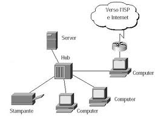
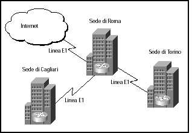

Tipologie reti informatiche
| La rete LAN (Local Area Network) è una rete locale composta da computer che risiedono tutti nello stesso ambiente di lavoro. Sono situati, quindi, in un’area geografica circoscritta (all’interno dello stesso edificio o edifici adiacenti). I computer, collegati fisicamente tra loro, possono condividere file, programmi, periferiche, ecc. |
 | |
| Le reti WAN (Wide Area Network) o reti geografiche, coprono lunghe distanze, arrivando oltre i confini geografici di città e stati. Le connessioni possono avvenire tramite ponti radio, reti pubbliche o addirittura stazioni satellitari per le telecomunicazioni. |  |